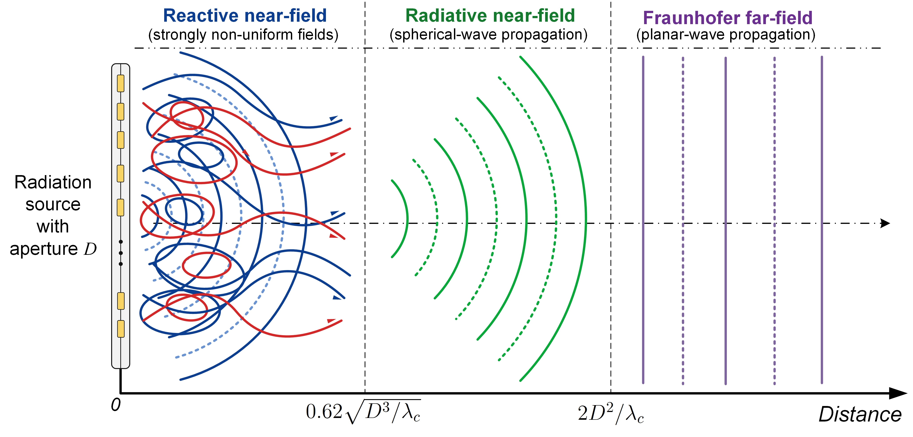
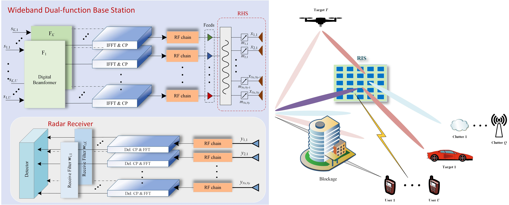

|
Research
My research interests lie in signal processing, optimization, and machine learning for
next-generation wireless sensing and communications. In particular, I focus on integrated
sensing and communication (ISAC), near-field sensing, reconfigurable intelligent surfaces,
holographic MIMO, radar waveform design, target localization, channel estimation, and
convex/nonconvex optimization for 6G systems.
My current research topics include:
Integrated sensing and communication (ISAC)
Near-field sensing, localization, and Cramér-Rao bound analysis
Reconfigurable intelligent surfaces and holographic MIMO
Radar signal processing, waveform design, and beamforming
Convex/nonconvex optimization and machine learning for 6G systems
During my Ph.D. and postdoctoral research, I participated in several research projects on
next-generation radar, high-mobility sensing and communication networks, and adaptive
communication frameworks, including SPRINGER, SENCOM, and AGNOSTIC.
Near-Field Sensing and Integrated Sensing and Communication
|

|
Near-field sensing has become increasingly important for extremely large-scale antenna arrays,
holographic surfaces, and high-frequency 6G systems. My work studies the fundamental
performance limits of near-field sensing and ISAC systems, with emphasis on accurate
Cramér-Rao bound analysis, wideband signal models, target localization, velocity estimation,
and the coupling between sensing and communication functionalities.
Selected Publications:
T. Wei, K. V. Mishra, B. Shankar M. R., and B. Ottersten,
“Fundamental Limits for Near-Field Sensing — Part I: Narrow-Band Systems,”
IEEE Transactions on Antennas and Propagation, accepted, 2026.
T. Wei, K. V. Mishra, B. Shankar M. R., and B. Ottersten,
“Fundamental Limits for Near-Field Sensing — Part II: Wide-Band Systems,”
IEEE Transactions on Antennas and Propagation, accepted, 2026.
T. Wei, K. V. Mishra, L. Wu, and M. R. B. Shankar,
“Wideband Beamforming with Frequency-Spatial Coupling in Near-Field Holographic ISAC,”
in Proc. 33rd European Signal Processing Conference (EUSIPCO), Palermo, Italy, 2025.
T. Wei, K. V. Mishra, L. Wu, and M. R. B. Shankar,
“Cramér-Rao Bounds for Wideband Near-Field Sensing,”
in Proc. IEEE International Conference on Acoustics, Speech and Signal Processing (ICASSP),
Hyderabad, India, 2025.
|
Reconfigurable Intelligent Surfaces and Holographic MIMO
|
 |
Reconfigurable intelligent surfaces (RISs) and holographic surfaces provide new degrees of
freedom for controlling the wireless propagation environment. My research investigates
RIS-aided and holographic dual-function radar-communication systems, with a focus on
wideband beamforming, active-passive beamformer design, Doppler-tolerant transmission,
and hardware-aware signal processing for intelligent surfaces.
Selected Publications:
T. Wei, L. Wu, K. V. Mishra, and M. R. B. Shankar,
“RIS-Aided Wideband Holographic DFRC,”
IEEE Transactions on Aerospace and Electronic Systems, vol. 60, no. 4, pp. 4241-4256, Aug. 2024.
T. Wei, L. Wu, K. V. Mishra, and M. R. B. Shankar,
“Multi-IRS-Aided Doppler-Tolerant Wideband DFRC System,”
IEEE Transactions on Communications, vol. 71, no. 11, pp. 6561-6577, Nov. 2023.
T. Wei, L. Wu, K. V. Mishra, and M. R. B. Shankar,
“RIS-Aided Wideband DFRC with Reconfigurable Holographic Surface,”
in Proc. IEEE International Conference on Acoustics, Speech and Signal Processing (ICASSP),
Rhodes, Greece, 2023.
T. Wei, L. Wu, K. V. Mishra, and M. R. B. Shankar,
“Simultaneous Active-Passive Beamformer Design in IRS-Enabled Multi-Carrier DFRC System,”
in Proc. 30th European Signal Processing Conference (EUSIPCO), Belgrade, Serbia, 2022.
T. Wei, L. Wu, K. V. Mishra, and M. R. B. Shankar,
“IRS-Aided Wideband Dual-Function Radar-Communications with Quantized Phase-Shifts,”
in Proc. IEEE Sensor Array and Multichannel Signal Processing Workshop (SAM),
Trondheim, Norway, 2022.
|
Radar Signal Processing and Waveform Design
|
|
Radar waveform design and beamforming are key components for improving sensing accuracy,
detection performance, and hardware efficiency. My work develops signal processing and
optimization methods for MIMO radar waveform design, sparse array beampattern synthesis,
one-bit DAC radar, and radar-communication coexistence.
Selected Publications:
T. Wei, Z. Cheng, and B. Liao,
“Transmit Beampattern Synthesis for MIMO Radar with One-Bit Digital-to-Analog Converters,”
Signal Processing, vol. 188, p. 108228, Nov. 2021.
T. Wei, L. Wu, and M. R. B. Shankar,
“Joint Waveform and Precoding Design for Coexistence of MIMO Radar and MU-MISO Communication,”
IET Signal Processing, vol. 16, no. 7, pp. 788-799, May 2022.
T. Wei, L. Wu, and M. R. B. Shankar,
“Sparse Array Beampattern Synthesis via Majorization-Based ADMM,”
in Proc. IEEE 94th Vehicular Technology Conference (VTC2021-Fall), Norman, OK, USA, 2021.
T. Wei, H. Huang, and B. Liao,
“MIMO Radar Transmit Beampattern Synthesis via Waveform Design for Target Localization,”
in Proc. IEEE International Conference on Acoustics, Speech and Signal Processing (ICASSP),
Brighton, UK, 2019.
T. Wei, B. Liao, H. Huang, and Z. Quan,
“Online Mutual Coupling Calibration Using a Signal Source at Unknown Location,”
in Proc. IEEE Sensor Array and Multichannel Signal Processing Workshop (SAM),
Sheffield, UK, 2018.
|
Optimization and Machine Learning for 6G Systems
|
|
Optimization is a central tool in my research for designing efficient sensing and communication
systems. I am interested in structure-exploiting algorithms for convex and nonconvex problems,
including ADMM-based methods, quadratic equality-constrained optimization, beamforming
optimization, and learning-assisted signal processing for 6G systems.
Selected Publications:
T. Wei, H. Huang, L. Wu, C.-Y. Chi, M. R. B. Shankar, and B. Ottersten,
“Quadratic Equality Constrained Least Squares: Low-Complexity ADMM for Global Optimality,”
IEEE Signal Processing Letters, vol. 33, pp. 361-365, 2026.
T. Wei, Y. Xu, X. Wang, P.-H. Ho, M. R. B. Shankar, R. State, and B. Ottersten,
“Low-Complexity Algorithm for Stackelberg Prediction Games with Global Optimality,”
submitted, 2026.
K. Liang, H. Guo, L. Peng, P.-H. Ho, J. Yuan, and T. Wei,
“Deep-Learning Based Multi-Point Sound Field Control in Reverberant Environments,”
IEEE Transactions on Consumer Electronics, vol. 72, no. 1, pp. 2399-2408, 2026.
|
|